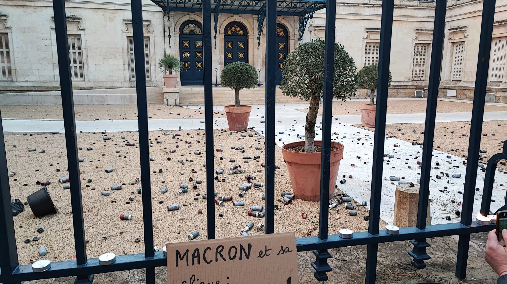

Compte rendu fédéral
À Niort, rassemblement devant la préfecture après Sainte-Soline
Date indiquée par Facebook · 30 mars 2023
Repères éditoriaux
La publication fédérale du 30 mars rend compte du rassemblement devant la préfecture et de la dénonciation des violences policières lors de la mobilisation de Sainte-Soline.
Texte conservé avec la publication
Beaucoup de monde ce soir au rassemblement devant la préfecture de #Niort pour dénoncer les #ViolencesPolicières lors de la manifestation de Ste Soline.
#bassinesnonmerci
#NoBassaran
Retour à l'envoyeur de débris des munitions envoyés sur les manifestants de Ste Soline.

Sources
Archive rouge · export Facebook · AR-0002-FB-01700
À lire aussi · Sainte-Soline. L’appel aux rassemblements du 30 mars